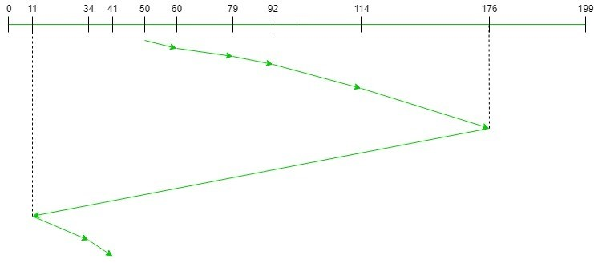

C-LOOK (Circular LOOK)
C-LOOK takes the advantages of both the disk scheduling C-SCAN, and Look disk
scheduling. In C-look scheduling, the disk arm moves and service each request till the head reaches its highest
request, and after that, the disk arm jumps to the lowest cylinder without servicing any request, and the disk
arm moves further and service those requests which are remaining.
Advantages:
-
It does not lead to starvation.
-
It provides better performance as compared to LOOK Algorithm.
-
It provides low variance in response time and waiting time.
-
It does not cause the head to move till the ends of the disk when there are no requests to be serviced.
-
It reduces the waiting time for the cylinders just visited by the head.
Disadvantages:
-
In C-Look disk scheduling there may be more overhead to determine the end request.
-
There is more overhead in calculations.
Example:
-
Consider a disk containing 200 tracks (0-199) and the request queue includes the track number 176, 79, 34, 60,
92, 11, 41, 114 respectively. The current position of read//write head is 50, and direction is towards the
larger value.
-
Calculate the total number of cylinders moved by the head using the C-LOOK algorithm.
-
The disk contains 200 tracks varied from 0 - 199. The current position of R/W head is at 50. So calculate
total number of cylinder moved by head.

-
Total Number of cylinders moved by head
= (60 - 50) + (79 - 60) + (92 - 79) + (114 - 92) + (176 - 114) + (176 - 11) + (34 - 11) + (41 - 34)
= 321
Steps to Implement Algorithm:
-
Let Request array represents an array storing indexes of the tracks that have been requested in ascending
order of their time of arrival and head is the position of the disk head.
-
The initial direction in which the head is moving is given and it services in the same direction.
-
The head services all the requests one by one in the direction it is moving.
-
The head continues to move in the same direction until all the requests in this direction have been serviced.
-
While moving in this direction, calculate the absolute distance of the tracks from the head.
-
Increment the total seek count with this distance.
-
Currently serviced track position now becomes the new head position.
-
Go to step 5 until we reach at last request in this direction.
-
If we reach the last request in the current direction then reverse the direction and move the head in this
direction until we reach the last request that is needed to be serviced in this direction without servicing
the intermediate requests.
-
Reverse the direction and go to step 3 until all the requests have not been serviced
Time Complexity: O ( N * logN ) Auxiliary Space: O ( N )
Simulate